Member Search

|
Introduction
Counting the objects that satisfy some criteria is a very common task
in both TopCoder problems and in real-life situations. The myriad ways
of counting the number of elements in a set is one of the main tasks in
combinatorics, and I’ll try to describe some basic aspects of it in this
tutorial. These methods are used in a range of applications, from
discrete math and probability theory to statistics, physics, biology,
and more.
Combinatorial primitives
Let’s begin with a quick overview of the basic rules and objects that we will reference later.
The rule of sum
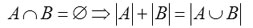
The rule of product
For example, if we have three towns -- A, B and C -- and there are 3 roads from A to B and 5 roads from B to C, then we can get from A to C through B in 3*5=15 different ways.
These rules can be used for a finite collections of sets.
Permutation without repetition
When we choose k objects from n-element set in such a way that the order matters and each object can be chosen only once:
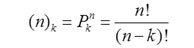
For example, suppose we are planning the next 3 challenges and we have a set of 10 easy problems to choose from. We will only use one easy problem in each contest, so we can choose our problems in 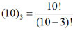 different ways.
Permutation (variation) with repetition
The number of possible choices of k objects from a set of n objects when order is important and one object can be chosen more than once:
nk
For example, if we have 10 different prizes that need to be divided among 5 people, we can do so in 510 ways.
Permutation with repetition
The number of different permutations of n objects, where there are n1 indistinguishable objects of type 1, n2 indistinguishable objects of type 2,..., and nk indistinguishable objects of type k (n1+n2+…+nk=n), is:
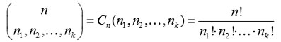
For example, if we have 97 coders and want to assign them to 5 rooms (rooms 1-4 have 20 coders in each, while the 5th room has 17), then there are 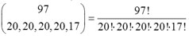 possible ways to do it.
Combinations without repetition
In combinations we choose a set of elements (rather than an arrangement, as in permutations) so the order doesn’t matter. The number of different k-element subsets (when each element can be chosen only once) of n-element set is:
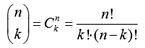
For example, if we have 7 different colored balls, we can choose any 3 of them in 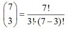 different ways.
Combination with repetition
Let's say we choose k elements from an n-element set, the order doesn’t matter and each element can be chosen more than once. In that case, the number of different combinations is:
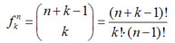
For example, let's say we have 11 identical balls and 3 different pockets, and we need to calculate the number of different divisions of these balls to the pockets. There would be 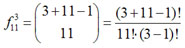 different combinations.
It is useful to know that 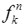 is also the number of integer solutions to this equation:
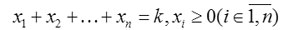
Why? It's easy to prove. Consider a vector (1, 1, …, 1) consisting of (n+k-1) ones, in which we want to substitute n-1 ones for zeroes in such way that we'll get n groups of ones (some of which may be empty) and the number of ones in the ith group will be the value of xi:
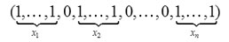
The sum of xi will be k, because k ones are left after substitution.
The Basics
Binary vectors
Some problems, and challenge problems are no exception, can be reformulated in terms of binary vectors. Accordingly, some knowledge of the basic combinatorial properties of binary vectors is rather important. Let’s have a look at some simple things associated with them:
1. Number of binary vectors of length n: 2n.
2. Number of binary vectors of length n and with k ‘1’ is
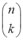.
We just choose k positions for our ‘1’s.
3. The number of ordered pairs (a, b) of binary vectors, such that the distance between them (k) can be calculated as follows: 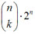.
The distance between a and b is the number of components that differs in
a and b -- for example, the distance between (0, 0, 1, 0) and (1, 0, 1,
1) is 2).
Let a = (a1, a2, …an), b = (b1, b2, …bn) and distance between them is k. Next, let’s look at the sequence of pairs (a1, b1), (a2, b2), … (an, bn). There are exactly k indices i in which ai ≠ bi. They can be (0,1) or (1,0), so there are 2 variants, and n-k can be either (0,0) or (1,1), for another 2 variants. To calculate the answer we can choose k indices in which vectors differs in ways, then we choose components that differs in 2k ways and components that are equal in 2n-k ways (all of which use the permutation with repetition formula), and in the end we just multiply all these numbers and get 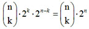.
Delving deeper
Now let’s take a look at a very interesting and useful formula called
the inclusion-exclusion principle (also known as the sieve principle):
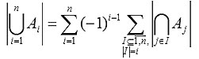
This formula is a generalization of:
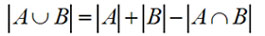
There are many different problems that can be solved using the sieve principle, so let’s focus our attention on one of them. This problem is best known as “Derangements”. A derangement of the finite set X is a bijection from X into X that doesn’t have fixed points. A small example: For set X = {1, 2, 3} bijection {(1,1), (2,3), (3,2)} is not derangement, because of (1,1), but bijection {(1,2), (2,3), (3,1)} is derangement. So let’s turn back to the problem, the goal of which is to find the number of derangements of n-element set.
We have X = {1, 2, 3,…, n}. Let:
- A be the set of all bijections from X into X, |A|=n!,
- A0 be the set of all derangements of X,
- Ai ( i ∈ X ) be the set of bijections from X into X that have (i,i),
- AI (I ⊆ X) be the set of bijections from X into X that have (i,i) ∀i⊆I, so 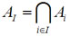 and |AI|=(n-|AI|)!.
In formula we have sums 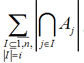, in our case we’ll have 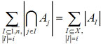, so let’s calculate them:
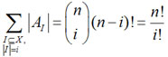
(because there are exactly  i-element subsets of X).
i-element subsets of X).
Now we just put that result into the sieve principle’s formula:
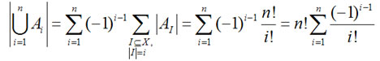
And now the last step, from 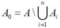 we’ll have the answer:
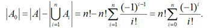
And the last remark:
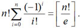
This problem may not look very practical for use in TopCoder problems, but the thinking behind it is rather important, and these ideas can be widely applied.
Another interesting method in combinatorics -- and one of my favorites, because of its elegance -- is called method of paths (or trajectories). The main idea is to find a geometrical interpretation for the problem in which we should calculate the number of paths of a special type. More precisely, if we have two points A, B on a plane with integer coordinates, then we will operate only with the shortest paths between A and B that pass only through the lines of the integer grid and that can be done only in horizontal or vertical movements with length equal to 1. For example:
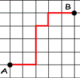 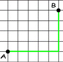 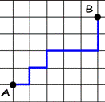
All paths between A and B have the same length equal to n+m (where n is the difference between x-coordinates and m is the difference between y-coordinates). We can easily calculate the number of all the paths between A and B as follows:
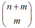 or 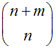.
Let’s solve a famous problem using this method. The goal is to find the number of Dyck words with a length of 2n. What is a Dyck word? It's a string consisting only of n X’s and n Y’s, and matching this criteria: each prefix of this string has more X’s than Y’s. For example, “XXYY” and “XYXY” are Dyck words, but “XYYX” and “YYXX” are not.
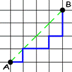 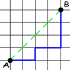
Let’s start the calculation process. We are going to build a geometrical analog of this problem, so let’s consider paths that go from point A(0, 0) to point B(n, n) and do not cross segment AB, but can touch it (see examples for n=4).
It is obvious that these two problems are equivalent; we can just build a bijection in such a way: step right - ‘X’, step up - ‘Y’.
Here's the main idea of the solution: Find the number of paths from A to B that cross segment AB, and call them “incorrect”. If path is “incorrect” it has points on the segment CD, where C = (0, 1), D = (n-1, n). Let E be the point nearest to A that belongs to CD (and to the path). Let’s symmetrize AE, part of our “incorrect” path with respect to the line CD. After this operation we’ll get a path from F = (-1, 1) to B.
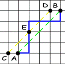 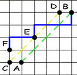
It should be easy to see that, for each path from F to B, we can build only one “incorrect” path from A to B, so we’ve got a bijection. Thus, the number of “incorrect” paths from A to B is 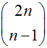. Now we can easily get the answer, by subtracting the number of “incorrect” paths from all paths:
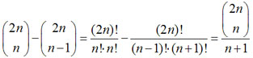
This number is also known as n’s Catalan number: Cn is the number of Dyck words with length 2n. These numbers also appear in many other problems, for example, Cn counts the number of correct arrangements of n pairs of parentheses in the expression, and Cn is also the number of the possible triangulations of a polygon with (n+2) vertices, and so on.
Using recurrence relations
Recurrence relations probably deserves their own separate article, but I
should mention that they play a great role in combinatorics.
Particularly with regard to TopCoder, most calculation problems seem to
require coders to use some recurrence relation and find the solution for
the values of parameters.
If you'd like to learn more, check out these tutorials: An Introduction to Recursion, Recursion, Part 2, and Dynamic Programming: From novice to advanced. Done reading? Let’s take a look at some examples.
ChristmasTree (SRM 331 Division Two – Level Three):
We’ll use DP to solve this -- it may not be the best way to tackle this problem, but it’s the easiest to understand. Let cnt[lev][r][g][b] be the number of possible ways to decorate the first lev levels of tree using r red, g green and b blue baubles. To make a recurrent step calculating cnt[lev][r][g][b] we consider 3 variants:
cnt[lev][r][g][b]=
1) we fill the last level with one color (red, green or blue), so just:
= cnt [lev-1][r-lev][g][b]+ cnt[lev-1][r][g-lev][b]+ cnt[lev-1][r][g][b-lev]+ ;
2) if (lev%2 == 0) we fill the last level with two colors (red+green, green+blue or red+blue), then we calculate the number of possible decorations using the Permutation with repetition formula. We’ll get 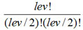 possible variants for each two colors, so just
(cnt[lev-1][r-lev/2][g-lev/2][b]+...+cnt[lev-1][r][g-lev/2][b-lev/2])+;
3) if (lev%3 == 0) we fill the last level with three colors and, again using the Permutation with repetition formula, we’ll get 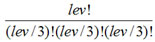 possible variants, so we’ll get:
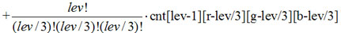
(all cnt[l][i][j][k] with negative indices are 0).
DiceGames (SRM 349 Division One – Level Two):
First we should do some preparation for the main part of the solution, by sorting sides array in increasing order and calculating only the formations where the numbers on the dice go in non-decreasing order. This preparation saves us from calculating the same formations several times (see SRM 349 - Problem Set & Analysis for additional explanation). Now we will only need to build the recurrence relation, since the implementation is rather straightforward. Let ret[i][j] be the number of different formations of the first i dice, with the last dice equal to j (so 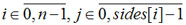, where n is the number of elements in sides). Now we can simply write the recurrence relation:
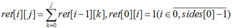
The answer will be 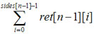.
Conclusion
As this article was written for novices in combinatorics, it focused
mainly on the basic aspects and methods of counting. To learn more, I
recommend you check out the reference works listed below, and keep
practicing – both in TopCoder SRMs and pure mathematical problems. Good
luck!
References:
- Hall M. “Combinatorial theory”
- Cameron P.J. “Combinatorics: Topics, Techniques, Algorithms”
- en.wikipedia.org :-)